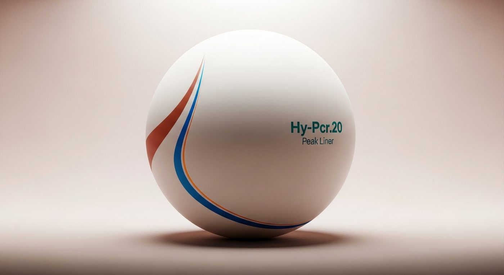
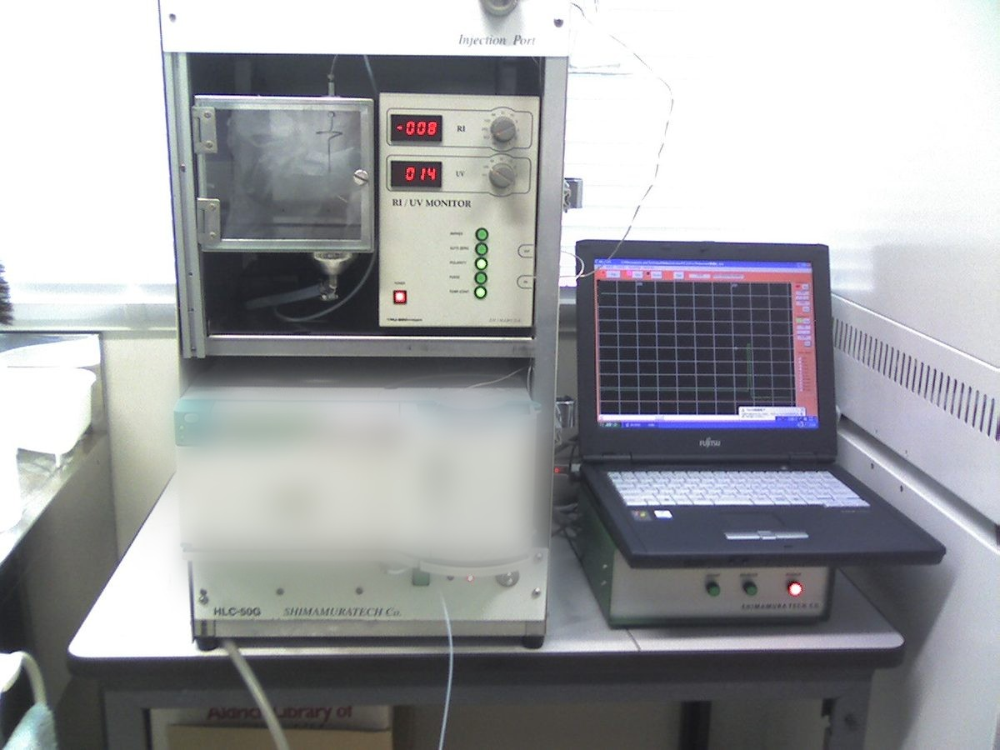
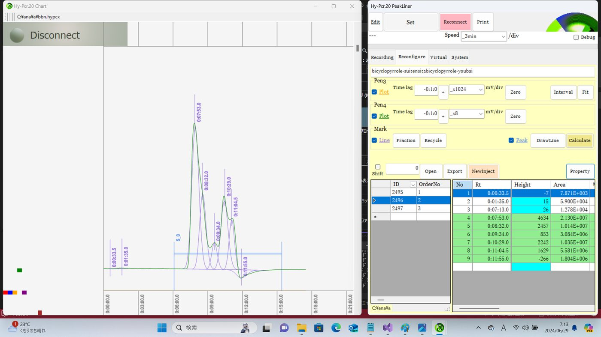
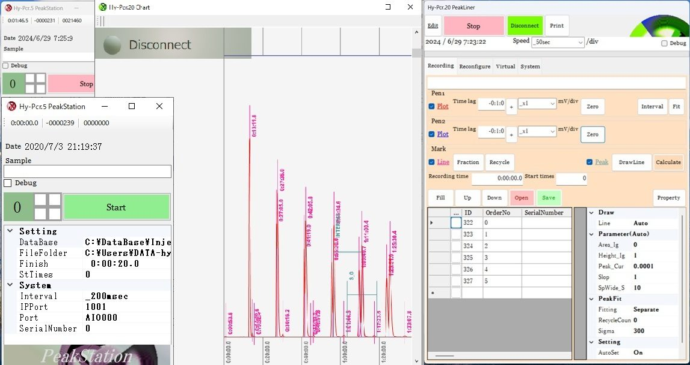
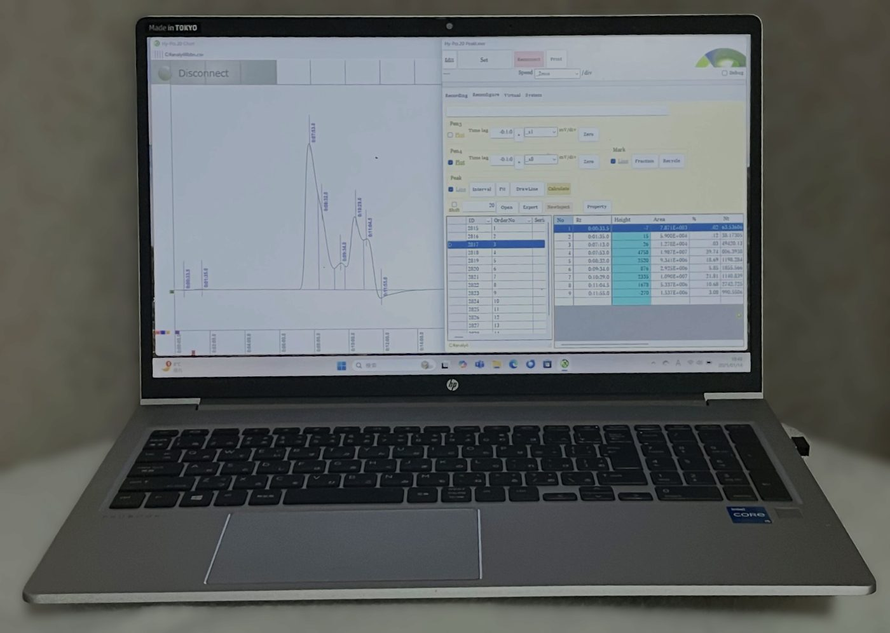

01 / REC
記録
記録中のチャートスピードの変更やベースラインの移動は、開始時から現在までのすべてに反映されます。記録中のピーク検出、フィッティング、リサイクルを行っている場合、次に検出されるピークのシミュレーションを行うことができます。
EQUIPMENT

CAPABILITY
データ管理が簡単に。
記録中でも柔軟に対応。
精密な分析を瞬時に。
効率的なプロセス管理。
高度な解析を実現。
どこからでもアクセス可能。
NEXT-GEN SEPARATION
JOINT PATENT
埼玉大学との共同特許取得
シリカを使った2液混合溶媒のリサイクル有機分離は、埼玉大学との共同特許技術です。この革新的技術を活用し、今まで不可能だった分離を実現します。
THREE FUNCTIONS

01 / REC
記録中のチャートスピードの変更やベースラインの移動は、開始時から現在までのすべてに反映されます。記録中のピーク検出、フィッティング、リサイクルを行っている場合、次に検出されるピークのシミュレーションを行うことができます。

02 / RECALC
保存された記録波形のリテンションや面積計算はもちろんのこと、ピークのフィッティングも行えます。また、Excelへエクスポートし、サンプルマクロを使って定性定量やGPC計算を行うことができます。

03 / SIM
ピークの拡散は1次元の移流拡散方程式から導くことができます。不完全に分離されたピークは、非線形最小二乗法によって単成分波形の分離が可能です。パソコーダはこの計算から単成分のピーク波形を求めています。

SINCE — 42 YEARS
私たちは理化学機器の業務を始めて42年になります。示差屈折率計、紫外吸光検出計、分取液体クロマトグラフィー、シリカカラムの2液混合溶媒のリサイクル有機分離装置の製造販売を行っています。 パソコーダはこれらの技術を土台にして日々改良を重ねて生まれたものです。ぜひ一度手に取って実際にお試しください。革新的な波形処理装置であるとご理解いただけると思います。デモのご依頼をお待ちしております。